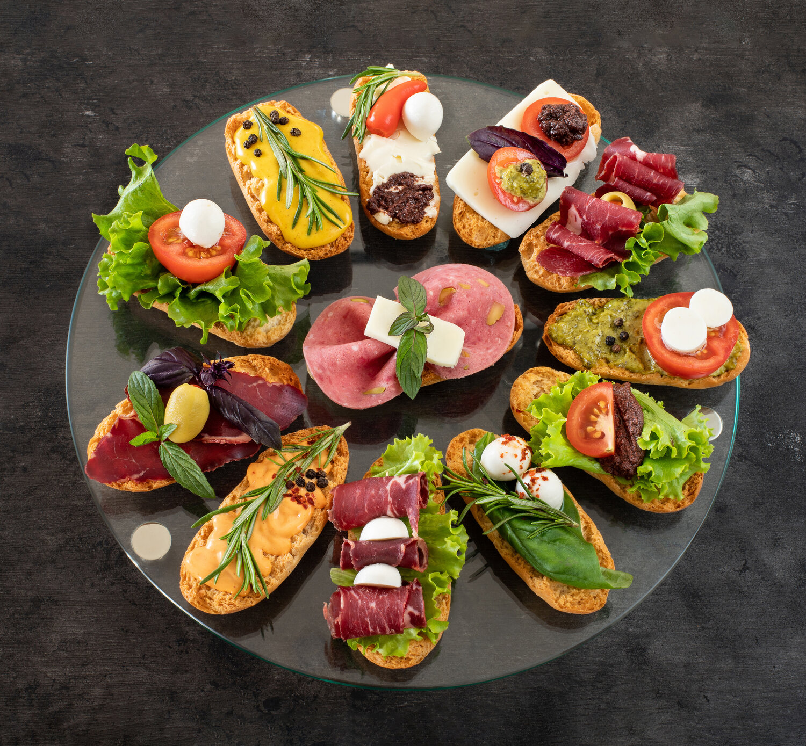
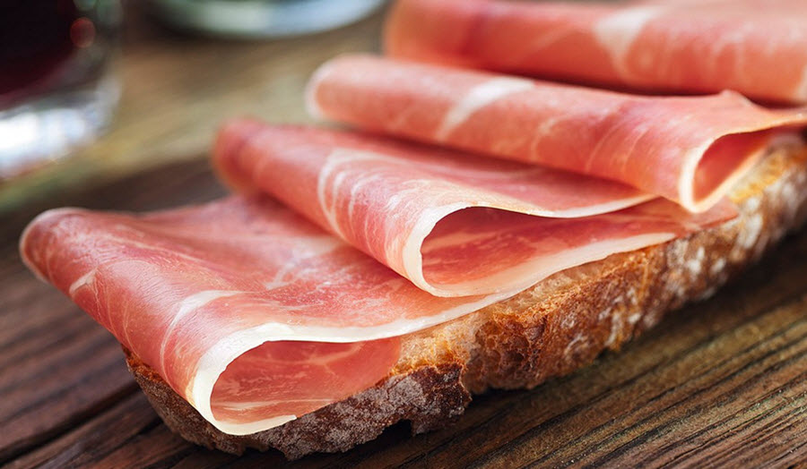

Barcelona
Mâncare
Ce delicii să deguști în capitala Cataloniei

2.Jamon
Jambonul iberic este un adevărat deliciu în capitala Cataloniei, iar degustarea lui este o experiență culinară. Fie că decizi să deguști jambon de la magazinele tradiționale, La Boqueria sau în restaurante, împreună cu tapas, jamón-ul merită savurat cu poftă. Mai mult, localnicii te pot învăța despre toate tipurile de jambon și îți recomandă felul preferat în funcție de gusturile tale.

3.Paella
Acest dish extrem de popular în Barcelona este o combinație de orez cu șofran, legume delicioase și fructe de mare, gusturile lor amestecându-se într-un fel de mâncare extrem de aromat. O paella clasică este preparată în tigaie specială și poate fi savurată de două persoane. Prețurile încep de la 15 euro.